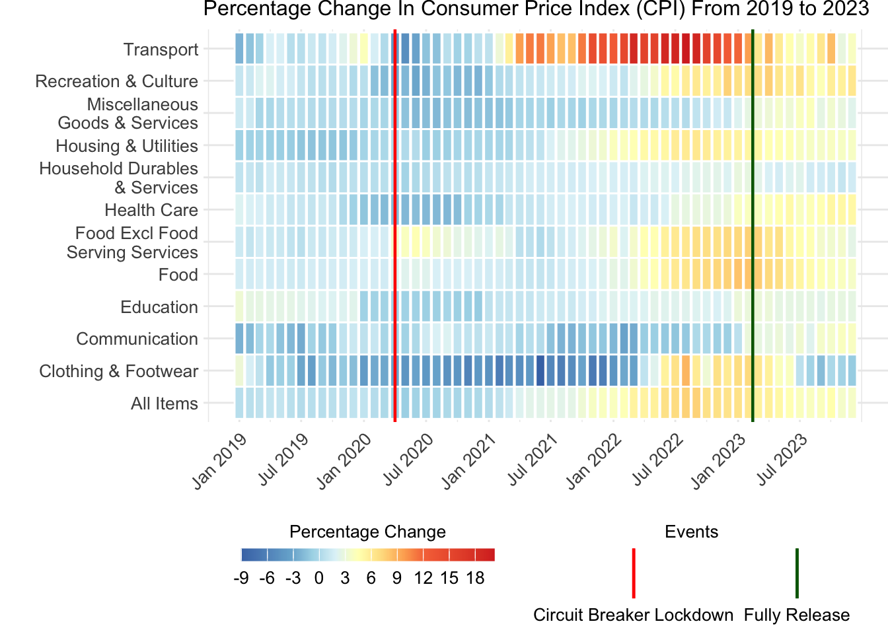
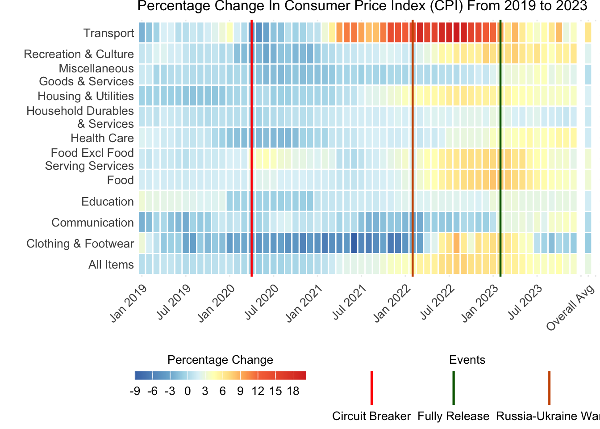

This document contains the data engineering required to reconstruct and improve the plot by @Straits_Times, as shown in Figure 1, depicting inflation of prices in Singapore in 2023.
The code below requires the following packages:
# Load necessary librarieslibrary(tidyverse)
── Attaching core tidyverse packages ──────────────────────── tidyverse 2.0.0 ──
✔ dplyr 1.1.4 ✔ readr 2.1.5
✔ forcats 1.0.0 ✔ stringr 1.5.1
✔ ggplot2 3.5.1 ✔ tibble 3.2.1
✔ lubridate 1.9.3 ✔ tidyr 1.3.1
✔ purrr 1.0.2
── Conflicts ────────────────────────────────────────── tidyverse_conflicts() ──
✖ dplyr::filter() masks stats::filter()
✖ dplyr::lag() masks stats::lag()
ℹ Use the conflicted package (<http://conflicted.r-lib.org/>) to force all conflicts to become errors
Figure 1: Heat map of inflationary impact on key itens iver 2023, published by the Straights Times.
@Straits_Times based their visualization on data by @Department_of_Statistics_Singapore, available in CSV format with each row representing the inflation rate of each item by month. The relevant column for data processing include:
Data Series: The category of the item, such as “Food,” “Clothing & Footwear,” etc.
load dataset
# Load the datasetdataset <-read_csv("M212911.csv", skip =10)dataset <- dataset[1:152,]dataset
For further processing of the data, we will convert the relevant columns to numeric format and filter the data to include only the relevant categories for the heatmap.
Preprocess data
# Convert relevant columns to numericdataset <- dataset|>mutate(across(matches("^2019|^2020|^2021|^2022|^2023"), ~as.numeric(as.character(.))))
Warning: There were 12 warnings in `mutate()`.
The first warning was:
ℹ In argument: `across(matches("^2019|^2020|^2021|^2022|^2023"),
~as.numeric(as.character(.)))`.
Caused by warning:
! NAs introduced by coercion
ℹ Run `dplyr::last_dplyr_warnings()` to see the 11 remaining warnings.
Next, we will pivot the data to a longer format to facilitate the creation of the heatmap. We will also adjust the data series names for better readability. We will also define a custom color scale for the heatmap.
# A tibble: 720 × 5
`Data Series` Year Month Percent_Change Date
<chr> <int> <fct> <dbl> <date>
1 All Items 2023 Dec 3.7 2023-12-01
2 All Items 2023 Nov 3.6 2023-11-01
3 All Items 2023 Oct 4.7 2023-10-01
4 All Items 2023 Sep 4.1 2023-09-01
5 All Items 2023 Aug 4 2023-08-01
6 All Items 2023 Jul 4.1 2023-07-01
7 All Items 2023 Jun 4.5 2023-06-01
8 All Items 2023 May 5.1 2023-05-01
9 All Items 2023 Apr 5.7 2023-04-01
10 All Items 2023 Mar 5.5 2023-03-01
# ℹ 710 more rows
The data are now ready for visualization. The next step will be to create a plot that will allow us to compare the rate of inflation of the relevant items over the years from 2019 to 2023, using the ggplot2 package to create a heatmap.
Generate heatmap
# Generate heatmap with customized color and spacingggplot(long_data, aes(x = Date, y =`Data Series`, fill = Percent_Change)) +geom_tile(color ="white", size =0.2) +# Add spacing between tilesgeom_vline(xintercept =as.numeric(as.Date("2020-04-01")), color ="Red", linetype ="solid", size =0.8) +# circuit breaker lockdown geom_vline(xintercept =as.numeric(as.Date("2023-02-13")), color ="Green", linetype ="solid", size =0.8) +# fully release color_scale +scale_x_date(breaks =seq.Date(from =min(long_data$Date, na.rm =TRUE), to =max(long_data$Date, na.rm =TRUE), by ="6 months"),date_labels ="%b %Y" )+scale_color_manual(name ="Events",values =c("Circuit Breaker Lockdown"="red", "Fully Release"="green"),guide =guide_legend(override.aes =list(linetype ="solid", size =1)) )+labs(title ="Percent Change In Consumer Price Index (CPI) From 2019 to 2023",x =NULL, y =NULL, fill ="Percent Change") +theme_minimal() +theme(axis.text.x =element_text(angle =45, hjust =1)) +theme(plot.title =element_text(size =12), axis.text.x =element_text(size =10), axis.text.y =element_text(size =10, margin =margin(0, 0, 0, 20)), legend.title =element_text(size =10),legend.text =element_text(size =10)) +theme(plot.margin =unit(c(0, 0, 0, 0), "cm")) +theme(legend.position ="bottom") +theme(legend.key.size =unit(1, "cm")) +theme(legend.key.width =unit(1, "cm"))
Warning: Using `size` aesthetic for lines was deprecated in ggplot2 3.4.0.
ℹ Please use `linewidth` instead.
Warning: No shared levels found between `names(values)` of the manual scale and the
data's colour values.
Warning: The `legend.title.align` argument of `theme()` is deprecated as of ggplot2
3.5.0.
ℹ Please use theme(legend.title = element_text(hjust)) instead.
Warning: The `legend.text.align` argument of `theme()` is deprecated as of ggplot2
3.5.0.
ℹ Please use theme(legend.text = element_text(hjust)) instead.

# Filter for 2023 datadata_2023 <- month_data|>select(`Data Series`, matches("^2023"))# Calculate average change for 2023data_2023 <- data_2023|>rowwise()|>mutate(`2023 Average Change`=mean(c_across(matches("^2023")), na.rm =TRUE))|>ungroup()# Pivot longer for heatmap generationlong_data <- data_2023|>pivot_longer(cols =matches("^2023"), names_to ="Year_Month", values_to ="Percent_Change")|>separate(Year_Month, into =c("Year", "Month"), sep =" ", extra ="drop")|>mutate(Year =as.integer(Year), Month =factor(Month, levels =c("Jan", "Feb", "Mar", "Apr", "May", "Jun", "Jul", "Aug", "Sep", "Oct", "Nov", "Dec")))# Define the custom discrete color scalediscrete_colors <-c("#03b0f0", "#89d9fa", "#fee400", "#f7801c", "#bb1211")breaks <-c(-3, 0, 3, 6, 9, 12)labels <-c("-3 to 0", "0 to 3", "3 to 6", "6 to 9", "9 to 12")
# Prepare data for the average change rowaverage_data <- data_2023|>select(`Data Series`, `2023 Average Change`)|>rename(Percent_Change =`2023 Average Change`)|>mutate(Month ="Average", Year =2023)# Combine the average data with the original long datacombined_data <-bind_rows(long_data, average_data)# Ensure "Average" appears last in the plotcombined_data$Month <-factor(combined_data$Month, levels =c(levels(long_data$Month), "Average"))# Filter out any NA valuescombined_data <- combined_data|>filter(!is.na(Month))
print(combined_data)
# A tibble: 156 × 4
`Data Series` Year Month Percent_Change
<chr> <dbl> <fct> <dbl>
1 All Items 2023 Dec 3.7
2 All Items 2023 Nov 3.6
3 All Items 2023 Oct 4.7
4 All Items 2023 Sep 4.1
5 All Items 2023 Aug 4
6 All Items 2023 Jul 4.1
7 All Items 2023 Jun 4.5
8 All Items 2023 May 5.1
9 All Items 2023 Apr 5.7
10 All Items 2023 Mar 5.5
# ℹ 146 more rows
CFI 2013 heatmap
# Generate the heatmap including the average rowheatmap_with_average <-ggplot(combined_data, aes(x = Month, y =`Data Series`)) +geom_tile(aes(fill =cut(Percent_Change, breaks = breaks, labels = labels, include.lowest =TRUE)), color ="white", size =1) +# Use white fill and black border for each tilescale_fill_manual(values =setNames(discrete_colors, labels), name ="Percent Change") +geom_text(aes(label =round(Percent_Change, 1)), size =3, color ="black") +# Add text labels for percent changelabs(title ="Percent Change In Consumer Price Index (CPI) Over Corresponding Period Of Previous Year, 2023",x ="", y ="") +theme_minimal() +theme(axis.text.x =element_text(angle =45, hjust =1), # Rotate x-axis labelsaxis.text.y =element_text(size =8), # Adjust y-axis label sizeplot.title =element_text(size =20), legend.title =element_blank(), # Remove legend titlelegend.text =element_text(size =10),legend.position ="top",legend.direction ="horizontal",legend.key.height =unit(0.5, "cm"),legend.key.width =unit(2, "cm"),legend.spacing.x =unit(0, "cm"),legend.spacing.y =unit(0.5, "cm"),plot.margin =unit(c(1, 1, 1, 1), "cm"))# Display the heatmap with the average rowprint(heatmap_with_average)
CFI 2013 heatmap old
colors <-c("#03b0f0", "#89d9fa", "#fee400", "#f7801c", "#bb1211")breaks <-c(-3, 0, 3, 6, 9, 12)labels <-as.character(breaks)# Create a vector of month abbreviationsmonth_abbr <-c("J", "F", "M", "A", "M", "J", "J", "A", "S", "O", "N", "D", "Average")combined_data <- combined_data|>mutate(is_average =if_else(Month =="Average", TRUE, FALSE))# Generate the heatmap without displaying numbers in the average columnheatmap_with_average <-ggplot(combined_data, aes(x = Month, y =`Data Series`)) +geom_tile(aes(fill = Percent_Change), color ="white", size =1) +# Use white fill and black border for each tilescale_fill_stepsn(colors = colors, breaks = breaks, labels = labels, name ="Percentage change, year on year",limits =c(min(breaks), max(breaks))) +geom_text(aes(label =ifelse(FALSE, round(Percent_Change, 1), "")), size =3, color ="black") +# No text labels for average columnlabs(title ="Percent Change In Consumer Price Index (CPI) Over Corresponding Period Of Previous Year, 2023",x ="", y ="") +scale_x_discrete(labels = month_abbr) +theme_minimal() +theme(axis.text.x =element_text(angle =45, hjust =1), # Rotate x-axis labelsaxis.text.y =element_text(size =8), # Adjust y-axis label sizeplot.title =element_text(size =20), legend.title =element_text(size =10), # Customize legend title sizelegend.text =element_text(size =10),legend.position ="top",legend.direction ="horizontal",legend.key.height =unit(0.5, "cm"),legend.key.width =unit(1, "cm"),legend.spacing.x =unit(0, "cm"),legend.spacing.y =unit(0.5, "cm"),plot.margin =unit(c(1, 1, 1, 1), "cm")) +guides(fill =guide_colorbar(title.position ="top", title.hjust =0.5))# Display the heatmap with the average rowprint(heatmap_with_average)

2023 improved heatmap
combined_data <- combined_data|>mutate(is_average =if_else(Month =="Average", TRUE, FALSE))# Generate the heatmap including the average rowheatmap_with_average <-ggplot(combined_data, aes(x = Month, y =`Data Series`)) +geom_tile(aes(fill = Percent_Change), color ="white", size =1) +# Use white fill and black border for each tilescale_fill_stepsn(colors = colors, breaks = breaks, labels = labels, name ="Percentage change, year on year", limits =c(min(breaks), max(breaks))) +geom_text(aes(label =ifelse(is_average, round(Percent_Change, 1), "")), size =3, color ="black") +# Add text labels for percent change only for averagelabs(title ="Percent Change In Consumer Price Index (CPI) Over Corresponding Period Of Previous Year, 2023",x ="", y ="") +theme_minimal() +theme(axis.text.x =element_text(angle =45, hjust =1), # Rotate x-axis labelsaxis.text.y =element_text(size =8), # Adjust y-axis label sizeplot.title =element_text(size =20), legend.title =element_text(size =10), # Customize legend title sizelegend.text =element_text(size =10),legend.position ="top",legend.direction ="horizontal",legend.key.height =unit(0.5, "cm"),legend.key.width =unit(1, "cm"),legend.spacing.x =unit(0, "cm"),legend.spacing.y =unit(0.5, "cm"),plot.margin =unit(c(1, 1, 1, 1), "cm")) +guides(fill =guide_colorbar(title.position ="top", title.hjust =0.5))# Display the heatmap with the average rowprint(heatmap_with_average)